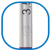
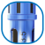
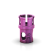

<div class="mask-group">
  <div class="mask-group-container">
    <div class="mask-group-content">
      <div class="mask-group-section">
        <div class="mask-group-section">
          <div class="mask-group-section">
            <div class="mask-group-section">
              <div class="mask-group-section2">
                <div class="icon-container">
                  <div class="sem-t-tulo-1-92">
                    
                  </div>
                  <div class="title">Neodent Control System</div>
                </div>
              </div>
              <div class="description-container">
                <div class="description-content">
                  <div class="subtitle">Confie em você</div>
                  <div class="text-container">
                    <div class="text-content">
                      <div class="description-text">
                        O procedimento cirúrgico para a instalação de implantes
                        pode ser percebido como complexo, especialmente quando
                        realizado na região posterior com limitação da
                        visualização, ou próximo às estruturas anatômicas, como
                        os canais de nervos. Neodent® Control System traz
                        confiança e eficiência à cirurgia de implantes.
                      </div>
                    </div>
                  </div>
                </div>
              </div>
            </div>
          </div>
        </div>
      </div>
    </div>
    <div class="main-content">
      <div class="main-content-container">
        <div class="section-container">
          <div class="section-content">
            <div class="section-title">Proteja as estruturas anatômicas</div>
            <div class="section-description">
              A colocação de implantes requer exatidão, e Neodent® Control
              System foi desenvolvido para reduzir os riscos da perfuração além
              do limite e para proteger as estruturas anatômicas, como por
              exemplo os nervos, seio maxilar ou raízes de dentes vizinhos,
              garantindo a profundidade final da osteotomia
            </div>
          </div>
          <div class="section-content">
            <div class="section-title">Supere a limitação na visualização</div>
            <div class="section-description">
              Neodent® Control System auxilia na construção de confiança durante
              situações de visualização reduzida por dentes adjacentes, abertura
              de boca limitada, sangramentos e saliva, que dificultam o controle
              visual através das linhas nas brocas em rotação, atingindo a
              profundidade planejada
            </div>
          </div>
          
        </div>
        <div class="section-container2">
          <div class="section-title">Solução intuitiva</div>
          <div class="section-description">
            Neodent® Control System é uma solução codificada por cores que
            facilita a identificação da sequência de brocas, o diâmetro e o
            comprimento dos implantes e a combinação de stops e brocas
          </div>
          <div class="section-image">
            
          </div>
        </div>
        <div class="section-container2">
          <div class="section-title">Sistema seguro de travamento do stop</div>
          <div class="section-description">
            O Stop para Broca Neodent® Control apresenta um sistema de
            travamento moderno, possibilitando um encaixe fácil e seguro na
            broca e oferecendo tranquilidade para a cirurgia
          </div>
          
        </div>
        <div class="section-container2">
          <div class="section-title">Solução de uso múltiplo</div>
          <div class="section-description">
            Os Stops para Broca Neodent® Control são fabricados em titânio, para
            limpeza profissional e esterilização em autoclave, permitindo
            múltiplos usos.
          </div>
          
        </div>
      </div>
    </div>
  </div>
</div>
